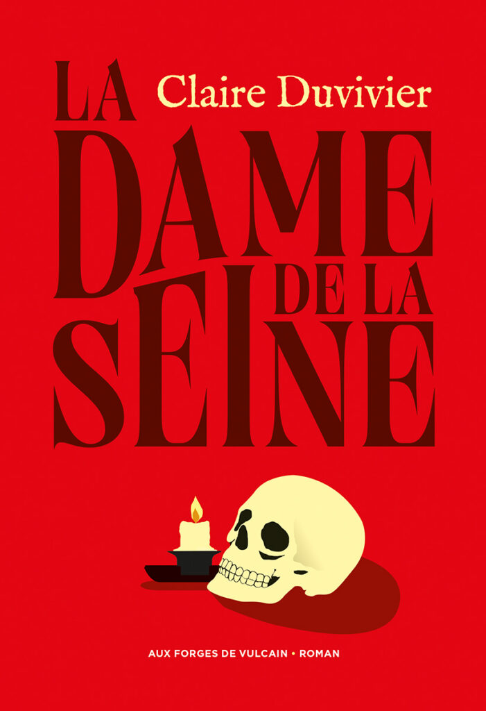

Alors que j’associe normalement Claire Duvivier (autrice notamment de la trilogie Capitale du Nord et d’Un long voyage) à la fantasy, sa dernière sortie lorgne plutôt du côté de la fiction historique. L’autrice française nous emmène en 1593 sur les pas de Christopher Marlowe, dramaturge et espion anglais. Suite à une fâcheux incident, il est emmené par son maître-espion (Thomas Walsingham, neveu de Francis) pour une mission à Paris. Dirigée par le très catholique Conseil des Seize, la capitale française vit dans la peur au rythme des pendaisons, un peu plus de vingt ans après le Massacre de la Saint-Barthélemy (qui joue un rôle important dans cette histoire). Justement, ils sont accueillis à leur arrivée à l’ambassade par un pendu, dont Christopher Marlowe va tenter de retrouver l’assassin. Son point de chute sera une auberge qui donne son nom au livre : La Dame de la Seine.
Claire Duvivier explore une époque très intéressante et son protagoniste ne l’est pas moins. Son Marlowe est athée, homosexuel et dramaturge avant tout. Pas vraiment un héros, il avoue volontiers être un espion médiocre. Alors qu’il termine l’écriture de sa pièce Massacre à Paris (consacrée, ça tombe bien, à la Saint-Barthélémy), il parcourt une ville résolument sombre, violente et dans laquelle il ne fait pas bon être autre chose que catholique. Son enquête le met sur les traces d’un tueur insaisissable et le souvenir du massacre des protestants va s’imposer à lui. Les accents queer du récit sont plutôt inattendus et viennent à point nommé, comme des sortes d’échappatoire à cette réalité morbide. D’un peu moins de 300 pages, La Dame de la Seine se lit vite et peut s’avérer difficile à lâcher, entre théâtre et furie religieuse.
Sortie : 2026